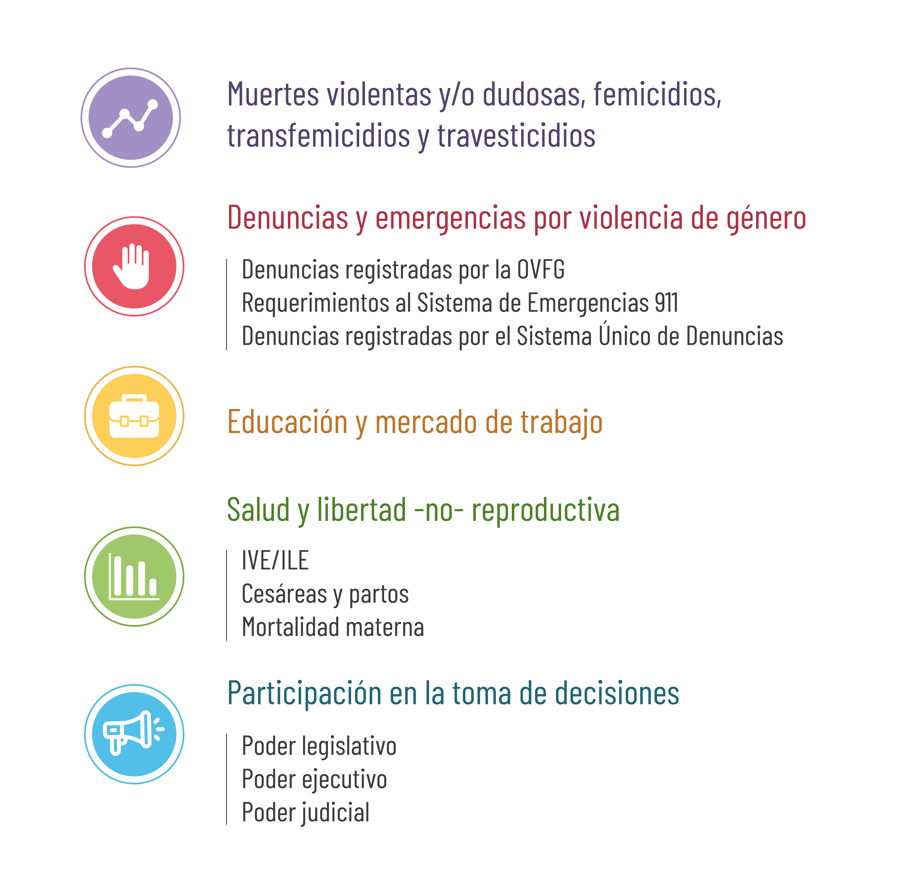

PORTAL ESTADÍSTICO DEL OVcM
El OVcM, tiene como misión desarrollar un sistema de información permanente. En ésta sección podés encontrar información actualizada e histórica vinculada a las desigualdades y violencias por motivos de género en la Provincia de Salta.
Indicadores disponibles
ESPECIFICACIONES TÉCNICAS
Sobre el portal estadístico del OVcM
El portal estadístico del Observatorio de Violencia contra las Mujeres de la Provincia de Salta es la principal herramienta de acceso a la información estadística relacionada con la violencia de género en la región. Este portal reúne, sistematiza y publica datos recolectados por organismos oficiales y constituye una fuente clave para el análisis y monitoreo de esta problemática.
La disponibilidad de información estadística confiable y actualizada es fundamental para comprender las dinámicas de la violencia de género, evaluar su impacto y orientar la toma de decisiones en políticas públicas. El portal del Observatorio organiza y presenta indicadores relevantes que permiten describir y analizar la situación provincial, apoyándose en fuentes oficiales locales y nacionales.
Estructura
El portal estadístico del Observatorio de Violencia contra las Mujeres de la Provincia de Salta está organizado en cinco ejes principales, alineados con las necesidades de análisis de la problemática de género en la región: femicidios, denuncias y emergencias por violencia de género, educación y mercado de trabajo, salud y libertad no reproductiva, y participación en la toma de decisiones. Estos ejes integran temas transversales que, por su relevancia en el contexto provincial y nacional, reciben una atención prioritaria para facilitar el acceso y uso de la información por parte de diversos actores.
Desarrollo
El portal estadístico del Observatorio de Violencia contra las Mujeres de la Provincia de Salta ha sido desarrollado empleando tecnologías web estándar que aseguran su accesibilidad y sostenibilidad. La estructura del sitio está construida íntegramente en HTML y CSS, lo que permite una base sólida y flexible para su diseño y funcionamiento. Por su parte, las aplicaciones gráficas interactivas que facilitan la visualización de los datos se implementaron en JavaScript utilizando la potente librería Apex Charts. Esta combinación tecnológica garantiza una experiencia de usuario amigable y un acceso intuitivo a los indicadores y estadísticas presentados.
En línea con el compromiso de transparencia en la gestión de datos públicos, el portal opera bajo una licencia GNU General Public License. Esto no solo asegura la libertad de uso, modificación y distribución del software, sino que también fomenta la confianza y participación de la ciudadanía. Asimismo, el código fuente del portal está disponible en un repositorio público en GitHub, permitiendo a los desarrolladores y usuarios interesados colaborar en su mejora y garantizar que los datos presentados sean abiertos, verificables y accesibles para todos.